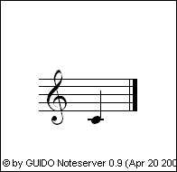

Saliery is a set of Google Wave extensions which lets you include and edit musical examples in your waves in GUIDO format.
GUIDO has a simple syntax. If you are not familiar with it, you can start learning it here.
You can install the extensions from the public wave entitled Saliery Extension Installer. Search for saliery extension installer with:public, and in the first search result, click Install extension.
After installation, when you're writing a wave, you can use the Add Score toolbar icon to insert a score at the cursor position. Or alternatively, you can add the gadget manually from http://saliery-wave.appspot.com/gadget/score.xml.
A text box appears in which you can edit the GUIDO source. While editing, you can resize it with the arrows to fit the text; when you're done, submit it with the tick mark or by pressing Alt+Enter.
The GUIDO source is rendered after a while. You should see your score now. If you want to correct or augment it, you can update its source by clicking on the score and selecting Edit Source from the popup menu. You can also play it back, increase or decrease its size, or reset it to the default value.
There is a more convenient way to insert scores into your message: the robot will automatically recognize music fragments in your messages. Just create a New Wave with Auto-Scores from the New Wave menu. If you did not install the extension, or you want to enhance an already existing wave with this capability, add the robot at saliery-wave@appspot.com as a participant to the wave.
You have to start and end GUIDO code snippets describing your music with a special string called tag: @@ (double at sign). When your message is submitted, GUIDO code snippets will be replaced with the gadget containing the corresponding sheet music.
For example, @@[ c ]@@ gets substituted by .
If you want to insert the tag (@@) into your message as text, write it twice (@@@@) – but if you edit the message later, be aware that the Saliery robot will interpret it! Unfortunately, there is no way to insert the tag this way into GUIDO code snippets; you have to edit the GUIDO source of the score gadget after it is inserted.